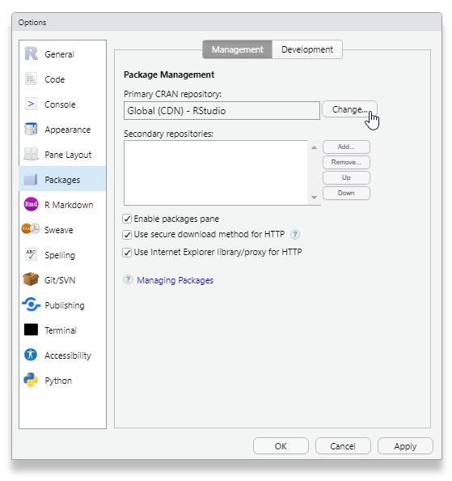

1.4 R packages
The different functions in R are bundled in so-called packages. The standard version itself is in fact a collection of 7 packages. Other packages are also available via CRAN. These additional packages can be downloaded and installed in different ways:
- Via function
install.packages("package_name") - Via the tab, in RStudio
- Via menu-item in RGui
R and its packages are available through a multitude of “mirrors”, identical repositories hosted on different servers, aiming to reduce network traffic and improve access speed when downloading packages. In RGui, you will be prompted to select a CRAN mirror when installing a package for the first time; the first option in the list, “0-Cloud”, is the mirror maintained by the people behind RStudio (https://cran.rstudio.com/). In RStudio, the default CRAN mirror is the RStudio mirror, but you can change the CRAN mirror via :

Packages will be downloaded (and looked for) in the library trees that R knows about. To view or change these locations, use .libPaths():
## [1] "/Library/Frameworks/R.framework/Versions/4.0/Resources/library"If .libPaths() shows the path of your personal folder on the Sciensano server (i.e., //sciensano.be/fs/name.surname/), then you have not installed R correctly. Please uninstall R from your personal folder and follow the instructions on the prerequisites page of this course for information on how and where to install R.
By default, packages are downloaded to the library folder of the current R instance. This implies that, when updating to a newer R version, this folder will not be recognized anymore. This might be seen as an advantage, since it forces you to update all your favorite R packages.
Finally, to start using an installed package, you need to load and attach it to the R session, using the library() function. In technical terms, this will load the namespace of the package (making its components available in memory) and will attach it on the search list (making its components findable).
Loading and attaching the required packages with library() should be added to your R scripts, as you need to load and attach them in every new session. This is not necessary for install.packages(), since you will not need to re-install the packages every time you run your script.
You can use the search() function to see which packages (or other namespaces) are currently attached.
Example 1.4 Viewing all attached namespaces
## [1] ".GlobalEnv" "package:readxl" "package:treeio" "package:vcd"
## [5] "package:grid" "package:forcats" "package:stringr" "package:dplyr"
## [9] "package:purrr" "package:readr" "package:tidyr" "package:tibble"
## [13] "package:tidyverse" "package:table1" "package:sf" "package:sjPlot"
## [17] "package:sjmisc" "package:sjlabelled" "package:sas7bdat" "package:rmarkdown"
## [21] "package:R.filesets" "package:R.oo" "package:R.methodsS3" "package:PropCIs"
## [25] "package:plotly" "package:naniar" "package:MASS" "package:magick"
## [29] "package:leaflet" "package:knitr" "package:kableExtra" "package:highcharter"
## [33] "package:haven" "package:ggnewscale" "package:flextable" "package:factoextra"
## [37] "package:ggplot2" "package:effects" "package:e1071" "package:devtools"
## [41] "package:usethis" "package:DescTools" "package:cowplot" "package:car"
## [45] "package:carData" "package:bookdown" "package:BiocManager" "package:ape"
## [49] "tools:rstudio" "package:stats" "package:graphics" "package:grDevices"
## [53] "package:utils" "package:datasets" "package:methods" "Autoloads"
## [57] "package:base"Note how the library() function does not necessarily require a character string as input, but also accepts the package name to be provided as an unquoted expression (i.e., as a “name” or “symbol”). In other words, it allows you to use library(readxl) instead of library("readxl"). This is an example of non-standard evaluation, which allows treating code as data. More information about non-standard evaluation can be found via http://adv-r.had.co.nz/Computing-on-the-language.html.